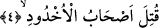

anlama katkısı şöyledir: “Vasfı bilinmeyen şâhide ve meşhuda yemin olsun” demektir.
Bazı âlimlerin ifâdesine göre âyette yer alan “meşhud” kelimesinden maksad cuma
günüdür. “Şahid” kelimesinden maksad ise o gün namaz kılmak ve Allah’ı zikretmek
için gelen müslümanlardır. Cuma gününden daha faziletli bir günün üstüne güneş ne
doğmuştur ne de batmıştır. Bu günde öyle bir an vardır ki mü’min kul Allah’a hayır
duâda bulunur da duâsı o ana denk gelirse mutlaka kabul olunur. Herhangi bir kötülükten
Allah’a sığınmışsa ve bu sığınması tam o ana denk gelmişse Allah Teâlâ onu sığındığı
kötülükten korur.
Bir hadis-i şerifte şöyle buyurulur: “Cuma günü benim üzerime salat u selamı
çoğaltınız. Çünkü cuma günü meleklerin şâhid oldukları ve şâhid olunan bir gündür.”
[57]
Bazı âlimlerin ifâdesine göre âyette yer alan “meşhud” arafe günü, “şâhid” ise arafatta
hazır bulunan hacılardır. Dolayısıyla hac olayını ta’zim etmek için bu kelime üzerine
yemin edilmesi ve isabetli olmuştur.
Başka bazı âlimlere göre “şâhid” her gün, “meşhud” ise o günde bulunan insanlardır.
Dolayısıyla âyeti bu şekilde anlarsak “meşhud”, “meşhudun aleyhi” mânâsına olmuş
olur. Şahid kelimesi de “tanıklık etmek” anlamına gelen “şehâdet” kökünden türemiş
olur. Nitekim Hasan Basri (rh.) der ki: “Hiçbir gün yoktur ki: Ben yepyeni bir günüm;
ben yapılan şeylere şâhid olacağım, beni ganimet bil. Yoksa güneş battıktan sonra
kıyamete kadar bir daha beni bulamazsın, demiş olmasın.”
Yazık, aziz ömrüm geçip gitti
Kalan şu birkaç nefes de geçti geçecek.
Geçen ömrüm yanlışlar içinde geçip gitti
Çâresine bakmazsam kalanı da böyle geçip gidecek.
Bazı âlimlere göre âyette geçen “şâhid” kelimesinden maksad; “cem‘iyyet” açısından
Hak’tır. “Meşhud” ise “tefrika” yönünden yine odur. İstersen şöyle diyebilirsin: İcmal
ve tafsil yönünden onu hakikatiyle ondan başka hiç kimse göremez.
Bazı âlimlere göre; “şâhid” ruh, “meşhud” ise tabiattır. Huseyn (rh.) der ki, bu âyet-i
kerimede kâinâtın onu var edenden ayrılmadığına ve ona yaklaşmadığına işâret vardır.
4. Hendeğe atılanlar (yakılarak) öldürüldü.
Bu son cümle yukardan beri yapılan yeminin cevabıdır. Lam’ın hazfedilmesi
okuduğumuz cümlenin bedduâ değil haber cümlesi olduğunu gösteriyor. Buna göre
“kutile ashabu’l-uhdûd” ifâdesi Allah’ın gazabı ve lânetiyle o hendeğin sâhipleri helâk
oldular demek olur. Ancak daha ağır basan ihtimale göre bu cümle duâ cümlesi olup